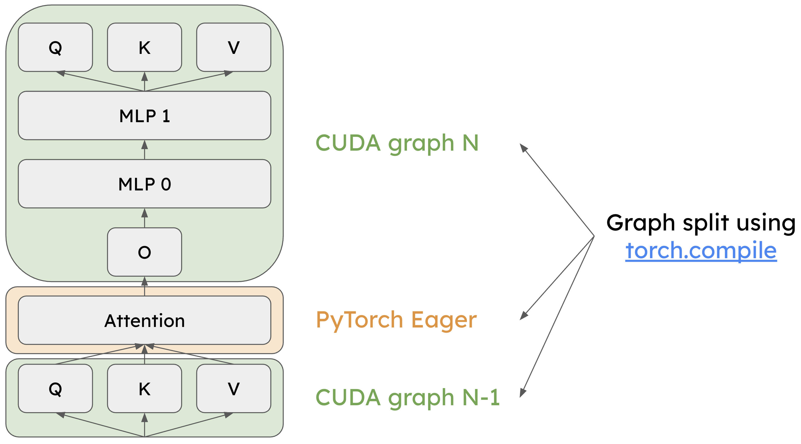
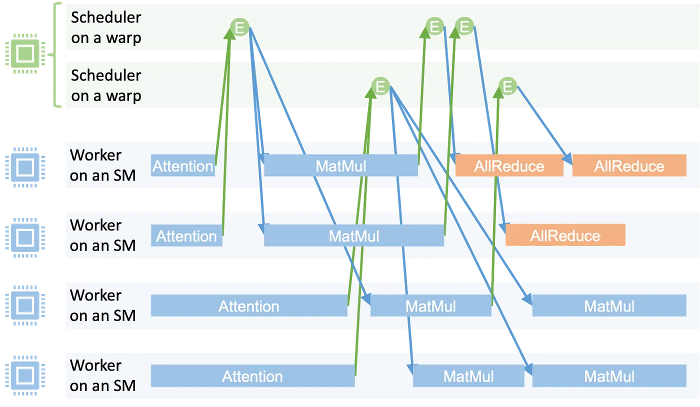

Compute Graph Optimization #
Introduction to Compute Graphs #
A compute graph is a directed acyclic graph (DAG) representation of a computation, where nodes represent operations (e.g., matrix multiplications, activations) and edges represent data flow between operations. This graph-based representation enables deep learning frameworks to analyze, optimize, and execute computations more efficiently than traditional imperative programming approaches.
Eager vs. Compiled Execution #
Deep learning frameworks typically support two execution modes:
Eager Mode (Imperative Execution): Operations execute immediately as they are called, similar to traditional Python code. Each operation dispatches to the appropriate kernel (e.g., CUDA kernel) right away. While this provides flexibility and ease of debugging, it incurs overhead from:
- Repeated kernel launch overhead
- Limited opportunities for cross-operation optimizations
- CPU-GPU synchronization points between operations
Compiled Mode (Graph Execution): The framework first builds a compute graph representing the entire computation, then optimizes and compiles this graph before execution. This approach enables:
- Graph-level optimizations: The framework can see the entire computation and apply transformations like operator fusion, constant folding, and dead code elimination
- Reduced kernel launch overhead: Multiple operations can be batched or fused into fewer kernel launches
- Better memory management: The framework can optimize memory allocation and reuse across operations
In PyTorch, torch.compile() transforms eager-mode code into a compiled graph representation. When you wrap a function with torch.compile(), PyTorch traces the computation during the first execution, builds a graph, and then optimizes it using techniques like operator fusion and kernel selection. Subsequent executions use this optimized graph, providing significant speedups for many workloads.
Example: A Simple Compute Graph #
Consider a simple transformer layer computation:
def transformer_layer(x, W_q, W_k, W_v, W_o):
q = x @ W_q # Query projection
k = x @ W_k # Key projection
v = x @ W_v # Value projection
attn = softmax(q @ k.T / sqrt(d)) # Attention
out = attn @ v # Attention output
return out @ W_o # Output projection
In eager mode, this executes as 6 separate operations, each requiring a kernel launch and potential CPU-GPU synchronization. The compute graph representation would look like:
Input (x) ──┬──> MatMul (W_q) ──> Query (q) ──┐
│ │
├──> MatMul (W_k) ──> Key (k) ────┼──> MatMul ──> Softmax ──> MatMul ──> Output
│ │
└──> MatMul (W_v) ──> Value (v) ──┘
A graph compiler can analyze this structure and apply optimizations such as:
- Fusing the three input projections (Q, K, V) into a single kernel that computes all three in one pass
- Combining attention operations to reduce memory traffic
- Eliminating intermediate storage by keeping data in fast on-chip memory
Types of Graph Optimizations #
Compute graph optimizations can be broadly categorized into several classes:
-
Operator Fusion: Combining multiple sequential operations into a single kernel to reduce kernel launch overhead and improve memory locality. For example, fusing a matrix multiplication followed by an activation function.
-
Constant Folding: Pre-computing operations on constant values at compile time rather than runtime.
-
Dead Code Elimination: Removing operations whose outputs are never used.
-
Memory Optimization: Optimizing memory allocation, reuse, and layout to minimize memory transfers and maximize cache efficiency.
-
Kernel Selection: Choosing the most efficient kernel implementation for each operation based on input shapes and hardware characteristics.
-
Graph Partitioning: Splitting the graph into subgraphs that can be executed independently or with different optimization strategies (e.g., CUDA Graphs for static shapes, eager execution for dynamic shapes).
The following sections explore advanced graph optimization techniques specifically tailored for LLM inference workloads, where dynamic input shapes and complex operator dependencies present unique challenges.
Piecewise CUDA Graph #
Efficiently handling varying input token counts and context lengths across execution steps presents a significant challenge in LLM inference. To address this, vLLM leverages torch.compile to capture CUDA Graphs across multiple bucket sizes, enabling optimized execution paths for different input configurations.
This graph capture mechanism proves highly effective for token-wise operators—operations that process each token independently, such as RoPE and RMSNorm. These operators exhibit predictable computational patterns that can be captured and replayed efficiently through CUDA Graphs.
However, cross-token operators present a different challenge. The attention module, which computes relationships between tokens, must execute in eager mode because it depends on multi-dimensional input shapes that vary dynamically. Exhaustively enumerating all possible shape combinations during compilation would be impractical, making CUDA Graph capture infeasible for these operators.
The following diagram illustrates the Piecewise CUDA Graph architecture in vLLM:

Token-wise operators like QKV projection and MLP layers are captured with torch.compile for CUDA Graph execution (light green). Cross-token operators like the attention module execute in eager mode (light yellow). (credits: 8th vLLM Meetup Slides)
By separating token-wise and cross-token operators, the piecewise CUDA Graph approach achieves high-performance execution through CUDA Graphs where possible, while maintaining the flexibility to handle dynamic shapes in attention operations. This hybrid execution model delivers the performance benefits of graph optimization without imposing restrictive shape constraints on the system.
Persistent Kernel #
While CUDA Graphs reduce both CPU overhead and kernel launch latency to some extent, persistent kernels take optimization further by producing megakernels—large, unified kernels that eliminate kernel launch overhead entirely and remove pipeline bubbles between operations.
The Mirage Persistent Kernel (MPK) framework implements this approach through a sophisticated two-stage process. First, the MPK compiler analyzes the computation graph and decomposes it into a fine-grained task graph, where each task represents a unit of work with explicit dependencies on other tasks. This task-level representation enables more flexible scheduling and resource utilization than traditional kernel-by-kernel execution.
Second, the MPK runtime orchestrates execution through a worker-scheduler architecture. Worker threads actively poll the task queue and execute tasks as they become available. Meanwhile, scheduler threads monitor task dependencies and emit activation events when all prerequisites for a task are satisfied. This event-driven coordination ensures tasks execute as soon as their dependencies are met, maximizing hardware utilization and minimizing idle time.

The MPK runtime executes a task graph within a single megakernel, with workers processing tasks and schedulers managing dependencies. (credits: Compiling LLMs into a MegaKernel: A Path to Low-Latency Inference, Zhihao Jia)
By consolidating multiple operations into a single persistent megakernel, MPK eliminates the overhead of launching individual kernels and the synchronization costs between them, resulting in substantially reduced inference latency for LLM workloads.